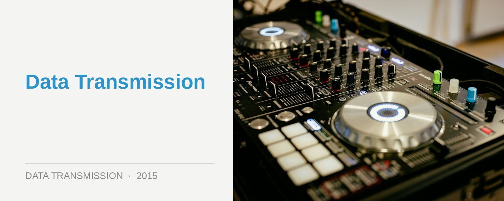

VH1 Supersonic - Goa, India
The sun and sands of Goa offer a compelling draw for dance devotees in the days between Christmas and New Year. While old-timers might complain the area’s burgeoning tourism has diluted the authentic Goa experience, which was so very defining for early dance culture, the pleasant surprise is that neither has it been overrun by lads and louts. Instead, it’s the prime destination where the Indians come and party every year, so for those making the intercontinental trek, you’ll be in the good company of locals. Enter VH1 Supersonic.
A festival on the beach that somewhat takes inspiration from large-scale events in Europe and the US, like Tomorrowland and Ultra Miami respectively, VH1 Supersonic captures all the elements that makes these parties appealing; while also leaving out anything that might have turned you off from going.
VH1 Supersonic has a lineup that’s tweaked for mass appeal, alongside a lovingly curated program of underground artists. It has the spectacle, without the crass commerciality. It has its beach setting, but with also the highest commitment to sound, production and organisation. It’s on a large scale, while also feeling intimate. Most importantly, VH1 Supersonic is an unmistakably Indian event that has blossomed from the heart of authentic dance culture.
December was the second time VH1 Supersonic visited the sands of Goa’s Candolim Beach, and it’s tough to avoid mentioning the context from which it came; or the fact that Sunburn Festival was also simultaneously taking place 30 minutes north. Supersonic promoter and Indian dance legend Nikhil Chinapa was also responsible for conceptualizing the Sunburn brand, engaged by Percept in 2007 to help develop an event. Several years later, Sunburn had developed into the most successful festival brand in the wider Asia region, and Chinapa was dismissed from his own creation.
Chinapa subsequently partnered with Viacom, who he’d worked with for over 15 years as an MTV host, to develop a new large-scale event to take place in Goa. As one of the first who’d endeavored to bring dance culture to his country, Chinapa has modeled VH1 Supersonic on his own authentic roots in the scene, and he’s drawn on a lot of goodwill from within both the Indian and international scene. And the resulting experience of the festival speaks for itself.
Sand underneath your feet
For anyone thinking of committing to a multi-day festival, a unique location is key; and VH1 Supersonic has this covered, with the most immediately striking element being Candolim Beach itself. You’re running around with sand underneath your feet all day, and short of the fences being dropped to allow you to run down and launch yourself into ocean (surely a logistical and insurance nightmare for a festival), it offers the best use of a beach venue that you could imagine. It’s a moderate and pleasant 20+ degrees in Goa this time of year, and there’s a permanent, serene orange dusk in the sky throughout the four afternoons of the festival.
The layout of VH1 Supersonic is somewhat of a triumvirate of awesomeness, and situated grandiosely at its center is the ‘Iron Heart’ mainstage. Sporting a steampunk-meets-Wonderland design, it’s clearly a little influenced by ID&T’s Euro behemoths, with an mixed assortment of fantasy and sci-fi imagery scattered around it’s massive LCD screens. It also has all the lights, lasers, C02 cannons you could hope for (as well as crystal-clear sound), to ensure it’s on par with what we expect from these kinds of international events. Dillon Francis made for a suitable crowd-drawing headliner for the first day of the festival.
However, just as important are the other two stages that flank either side of the ‘Iron Heart’, illustrating probably more than anything where VH1 Supersonic is coming from as an event.
On the right flank is ‘Laboratoire’, a modestly sized arena sporting a posse of acts from across the bass spectrum (with a thundering low-end sound system to match), with UK stalwart Goldie throwing down some huge drum n’ bass sounds to close the stage on the first day.
And to the left of the ‘Iron heart’ is the ‘Spectrum’ arena, sporting another impressive stage design comprised completely of tiered walls of LCD screens. While it hosted an assortment of sounds over the four days, traversing everything from psychedelic trance to EDM, its main focus was proper house and techno. Saturday afternoon boasted an enviable lineup; a cross-cultural hookup that saw New Delhi’s Ash Roy going back-to-back with the Berlin-based Heartthrob early in the afternoon, followed by a rather gutsy set of tech house from Indian-born Arjun Vagale, which appropriately warmed up for Magda and Carl Craig. Winner.
Four days in the sand
4pm makes for the ideal time to arrive at the grounds every day, when the simmering heat has started to settle, and you can grab a drink while the sun is setting. The ‘Iron Heart’ stage feels remarkably intimate before the thousands gather in front of it, though the ‘Spectrum’ stage is the best choice for the discerning listener before it gets dark. What’s on the menu today? Spanish Suara label boss Coyu to offer one of his trademark eclectic sets of house and techno, followed by Maya Jane Coles, who plays possibly the deepest, grooviest set of the entire festival.
However, the ‘Iron Stage’ is packing enough starpower tonight to make it worth a visit, even if you’re not so inclined towards mainstage EDM. Just go for the lasers, and those strobe lights flashing out over the huge crowd. On Sunday night the UK’s Gareth Emery plays a set that’s so brimming over with euphoric trance melodies, the crowd’s enthusiasm can barely be contained; the Indians feel a special connection with the more emotional side of dance culture.
Finishing the evening up, Paul van Dyk performs with a DJ setup and technology rider that’s nearly as elaborate as the epilepsy-inducing stage setup that’s behind him; and he delivers in the fashion of a true veteran, with a set that’s dynamic and unpredictable in a fashion that’s largely completely absent from a lot of mainstage music nowadays.
It’s the third day of the festival though where the mainstage programming really gets interesting; with a back-to-back set from Guy J and Jeremy Olander showing there’s more thought being given to the programming than just booking the same old EDM jocks. The pair starts on a melodic techno tip, before veering into deeper, techier territory than we’d probably expect from either of them. It’s pitched suitably upwards at the end with the progressive trance madness of King Unique’s remix of Guy’s own ‘Candyland’; and the whole experience feels unique. For those who were so inclined, both DJs played intimate afterparties not too far from the festival.
When the sun has set, and that spine-tingling excitement has started to build among the mainstage crowd, Indian veteran Pearl takes to the decks to demonstrate how much command she has of her craft; and she plays an extraordinary set that you would just never hear at the mainstage of any of the other big international festivals. Driving, emotive techno that meets the crowd’s energy perfectly, and peaks beautifully at the end with a dash of grandiose trance.
The closing set from Above & Beyond feels a little more predictable afterwards, featuring what’s nearly a back-to-back medley of all those finely-tuned hits from their new ‘We Are All We Need’ album. However, we know what we’re gonna get from an A&B show; and they deliver to expectations, with those sing-along records possibly connecting better with the emotion of the crowd than anything else heard at the festival over the four days.
The final day of VH1 Supersonic feels like a warmdown after the third evening; there’s a range of crowdpleasers at the mainstage like Dash Berlin and The Chainsmokers, though you’re better off spending your time at ‘Spectrum’ where John ‘00’ Fleming and Infected Mushroom are showing there’s still plenty of enthusiasm for the psychedelic roots of the Goa sound. And at the ‘Laboratoire’ bass stage, there’s pretty much something interesting going on at any time you care to wonder over there; Alix Perez, Calyx & Teebee, Icicle and the Stanton Warriors just a sample of the sub-bass feast of artists that are on offer over the four days.
Get yourself to Goa
VH1 Supersonic has more in common with its international festival counterparts than any of the enigmatic trance parties taking place on the sands of Goa in the early 90s. However, it’s an evolution that’s in tune with the area’s transformation into a place where all of India wants to go and party. There’s plenty of spectacle, but what’s really defining is the love and care that goes into the festival itself. Sound, production, programming… from an authentic perspective, it’s all there. And perhaps it’s also fitting that if Goa was one of the touch points where dance culture began, it’s now the place that embodies India’s own growing love of dance culture.